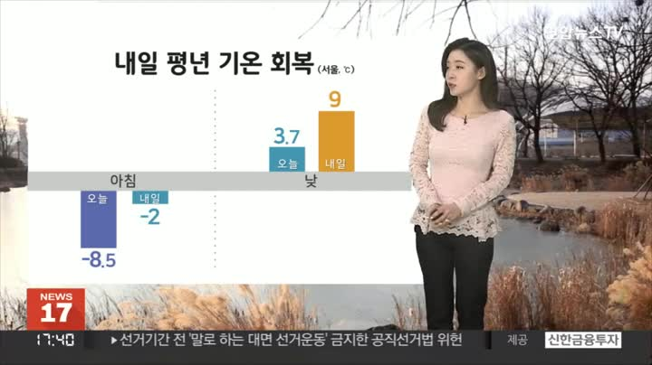

SK E&S, 드론쇼 무대서 ‘세계 최장 비행’ 액화수소 드론 전시
SK E&S가 부산 벡스코에서 진행 중인 ‘2022 드론쇼 코리아’에 세계 최장 비행
에
성공한 액화수소 무인항공기(드론)를 전시한다고 24일 밝혔다.
이번 행사는 24일부터 사흘간 진행된다.
SK E&S에 따르면 해당 무인항공기는 수소 드론 전문 벤처기업인 ‘엑센스’가 액화수소 드론 기술을 보유한 벤처기업 ‘헥사’와 파트너십을 맺고 제작했다. SK E&S는 상생협력기금을 조성, 엑센스의 연구개발을 지원해왔다.
이 드론은 최근 진행된 자체 시연에서 13시간 24분간 비행 기록을 세웠다.
현재 기네스북에 등재된 드론 최장 비행
세계기록은 12시간 7분으로,
엑센스와 헥사는 조만간 공인 기록 인정 절차를 거쳐 기네스북 기록 등재를
추진할 계획이라고 SK E&S는 전했다.
SK E&S 관계자는 액화수소 드론은 기체 상태의 수소를 영하 253도까지
냉각해 연료로 사용한다
며 에너지밀도가 높은 액화수소를 기반으로 하는 만큼
기존 리튬이온① 배터리② 드론 대비 최대 26배,
고 그이상 가능 설명했다.
기체수소 드론 대비 6배 이상
오랜 시간 비행이 가능하다장기 채공이 가능할까?
액화수소는 기체수소와 비교해 저장 밀도가 높아 연료탱크의
경량화가 가능하고, 저장압력이 대기압 수준이라 안정성도 높은 것으로 전해졌다.
추형욱 SK E&S 대표이사 사장은 기체수소 대비 대량 저장과 운송이 가능해
경제성이 우수하고 안정성도 높은 액화수소는 미래
이라고 했다.
소수차 화이팅!
소수차 화이팅!
수소자동차
존 내연기관 자동차들과 똑같이, 수소를 산소와 폭발적으로 연소시켜서 구동력을 얻는 방식
▣ 주해:
① 카메라, 휴대폰 등에 많이 사용하는 배터리입니다. 'mAh' 숫자가 클수록 배터리의 용량이 많아 오랫동안 사용합니다.② 축전지로서 전기를 화학 에너지로 변화시켜 축적하는 장치로, 희류산 속에 동판과 아연판을 대립시킨 것이다.
원본기사
오늘의 날씨
